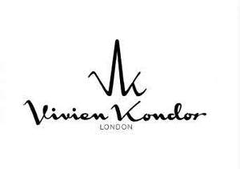

Trade Mark Journal No.2026/005 30 January 2026
UK00004298692 21 November 2025 (3,18)

- Class 3
- Nail polish; Nail polish remover; Nail polish removers; Nail polish pens; Polish; Nail polish remover pens; Nail polish removers [cosmetics]; Nail polish base coat; Nail polish top coat; Nail varnish; Varnish (Nail -); Nail glitter; Tooth polish; Nail varnishes; Nail varnish removers; Nail makeup; Nail gel; Nail enamel remover; Nail polishing powder; Nail varnish remover [cosmetics]; Nail enamels; Nail cosmetics; Nail enamel; Nail paint [cosmetics]; Nail hardeners; Nail enamel removers; Spray polish; Gel nail removers; Nail cream; Nail strengtheners; Nail primer [cosmetics]; Nail whiteners; Nail hardeners [cosmetics]; Microdermabrasion polish; Metal polish; Chrome polish; Dental polish; Shoe polish applicators containing shoe polish; Nail buffing preparations; Shoe polish and creams; Nail base coat [cosmetics]; Furniture polish; Nail tips; Car polish; Nail tips [cosmetics]; Tooth polishes; Body polish; Nail conditioners; Nail varnish removing preparations; Nail art stickers; Nail varnish for cosmetic purposes; Nail decolorants; Cosmetic nail preparations; Nail care preparations; Cosmetic nail care preparations; Nail repair preparations; Skin, eye and nail care preparations; Powder for forming sculpted finger nail tips; Nail-polish removers; Artificial nails; Preparations for removing gel nails; Dressings for nail reconstruction; Lip polisher; Varnish removers; Lotions for strengthening the nails; Hair lacquers; Cosmetics; Skincare cosmetics; Moisturisers [cosmetics]; Cosmetics and cosmetic preparations; Hair cosmetics; Skin fresheners [cosmetics]; Cosmetics for eye-lashes; Cosmetics for suntanning; Anti-aging moisturizers used as cosmetics; Organic cosmetics; Non-medicated cosmetics; Lip cosmetics; Skin moisturizers used as cosmetics; Natural cosmetics; Cosmetics preparations; Mousses [cosmetics]; Make-up palettes containing cosmetics; Tanning gels [cosmetics]; Cosmetics in the form of lotions; Tanning oils [cosmetics]; Beauty care cosmetics; Facial creams [cosmetics]; Colour cosmetics; Self-tanning preparations [cosmetics]; Cosmetics for animals; Suncare lotions [for cosmetic use]; Tanning preparations [cosmetics]; Decorative cosmetics; Eyebrow cosmetics; Multifunctional cosmetics; Milks [cosmetics]; Body creams [cosmetics]; Eye cosmetics; After-sun oils [cosmetics]; Skin masks [cosmetics]; Cosmetics for eye-brows; Tanning milks [cosmetics]; Suntan oils [cosmetics]; Functional cosmetics; Facial gels [cosmetics]; Skin care cosmetics; Fluid creams [cosmetics]; Cosmetics for children; Suntan lotion [cosmetics]; Non-medicated cosmetics and toiletry preparations; Humectant preparations [cosmetics]; Emollient preparations [cosmetics]; Cosmetics in the form of creams; Powder compacts [cosmetics]; Sun-tanning preparations [cosmetics]; Cosmetic hair lotions; Suntanning oil [cosmetics]; After-sun milk [cosmetics]; Colour cosmetics for the skin; After-sun milks [cosmetics]; Cosmetics for use on the skin; Cosmetic moisturisers; Sunscreens [for cosmetic use]; Bath powder [cosmetics]; Skin recovery creams [cosmetics]; Night creams [cosmetics]; Cosmetic creams and lotions; Sun blocking lipsticks [cosmetics]; Cosmetics for the use on the hair; Cosmetic products in the form of aerosols for skincare; Body gels [cosmetics]; Body and facial creams [cosmetics]; Lip stains [cosmetics]; Sunscreen creams [for cosmetic use]; Body care cosmetics; Sunscreen [for cosmetic use]; Creams (Cosmetic -); Cosmetic creams; Cosmetic soaps; Cosmetic skin fresheners; Cosmetics containing keratin; Cosmetics in the form of powders; Hair care lotions [for cosmetic use]; Dyes (Cosmetic -); Cosmetic dyes; Cosmetics in the form of oils; Beauty lotions; After-sun lotions [for cosmetic use]; Cosmetics containing panthenol; Cosmetic facial lotions; Facial lotions [cosmetic]; Cosmetic suntan lotions; Perfume oils for the manufacture of cosmetic preparations; Skin care lotions [cosmetic]; Colour cosmetics for children; Tissues impregnated with cosmetics; Anti-aging creams [for cosmetic use]; Sun protecting creams [cosmetics]; Cosmetic products for the shower; Smoothing emulsions [cosmetics]; Anti-ageing creams [for cosmetic use]; Perfumed powders [for cosmetic use]; Liners [cosmetics] for the eyes; Skin cleansers [cosmetic]; Moisturising skin lotions [cosmetic]; Cosmetic creams for the skin; Skin creams [cosmetic]; Skin creams [for cosmetic use]; Body and facial gels [cosmetics]; Perfumes; Fragrances; Oils for perfumes and scents; Perfumery and fragrances; Perfume; Aromatics for perfumes; Perfume oils; Liquid perfumes; Scents; Fragrances for automobiles; Extracts of flowers [perfumes]; Flowers (Extracts of -) [perfumes]; Perfumeries; Perfumery; Household fragrances; Solid perfumes; Deodorants for personal use [perfumery]; Body deodorants [perfumery]; Body fragrances; Perfumed potpourris; Perfumed soaps; Aftershave lotions; Aftershaves; Fumigation preparations [perfumes]; Cologne; Room perfume sprays; Ionone [perfumery]; Fragrance preparations; Room fragrances; Perfume water; Perfumed creams; Perfumed sachets; After-shave lotions; Scented soaps; Fragrance emitting wicks for room fragrance; Scented oils; Fragrance refills for non-electric room fragrance dispensers; Essences for fragrancing; Synthetic perfumery; Fragrance sachets for eye pillows; Perfumed powders; Vanilla perfumery; Aftershave balms; Perfumed lotions [toilet preparations]; Hair shampoo; Hair shampoos; Hair dye; Hair relaxers; Hair pomades; Hair texturizers; Hair conditioner; Hair mousse; Dyes for the hair; Hair dyes; Hair lighteners; Hair mascara; Hair bleaches; Hair colourants; Hair bleach; Hair serums; Hair lotion; Hair lotions; Hair gel; Hair moisturizers; Hair rinses; Hair color; Hair conditioners; Hair mousses; Hair sprays; Hair wax; Hair styling lotions; Hair colouring; Hair moisturisers; Hair oils; Hair spray; Shampoos for human hair; Hair styling gel; Hair creams; Hair cream; Hair colorants; Hair gels; Hair nourishers; Hair powder; Hair emollients; Styling sprays for the hair; Tints for the hair; Baby hair conditioner; Hair tonics; Hair chalks; Hair styling waxes; Hair oil; Hair masks; Hair lacquer; Hair balsam; Hair styling spray; Hair balm; Hair balms; Hair styling gels; Styling gels for the hair; Colouring lotions for the hair; Hair tonic; Styling paste for hair; Hair liquid; Hair glaze; Hair and body wash; Cosmetic preparations for the hair and scalp; Wax treatments for the hair; Sunscreen lotions; Scented body lotions and creams; Moisturising creams, lotions and gels; Suncare lotions; Skin lotions; Lotions for the skin; Shaving lotions; Moisturizing body lotions; Bathing lotions; Massage oils and lotions; Facial lotions; Cleansing lotions; Body lotions; Hand lotions; Baby lotions; Moisturizing creams; Hair care lotions; After-shave creams; Tanning creams; Bath lotion; Skin lotion; Aftershave creams; Make-up removing lotions; Milky lotions for skin care; Sun care lotions; Bath creams (Non-medicated -); Shaving lotion; Moisturising creams; Bath creams; Shower creams; Moisturising skin creams [cosmetic]; Face and body lotions; Hair color removers; Hair colour removers; Colour removers for the hair; Hair colouring and dyes; Hair coloring preparations; Bleaches for use on the hair; Colour cosmetics for the eyes; Hair decolorants; Breath freshener; Breath fresheners; Air fragrance reed diffusers; Air fragrancing preparations; Air fragrance preparations; Eye gel; Eye gels; Eye shadow; Eye shadows; Eye make-up; Eye makeup; Eye correction serum; Eye creams; Eye lotions; Cosmetics in the form of eye shadow; Eye concealers; Cosmetic eye gels; Eye liner; Eye cream; Eye pencils; Eye sticks; Eye brightening correctors; Under eye correctors; Gel eye masks; Eye wrinkle lotions; Cosmetic eye pencils; Eye make-up removers; Eye stylers; Eye makeup remover; Eye compresses for cosmetic purposes; Gel eye patches for cosmetic purposes; Eye make up remover; Cosmetic preparations for eye lashes; Eyes make-up; Eye care products, non-medicated; Eyelid shadow; Cosmetic creams for firming skin around eyes; Eyelid doubling makeup; Lip tints; Lip balm; Lip gloss; Lip glosses; Lip cream; Lip makeup; Lip rouge; Lip gloss palettes; Lip balms; Lip liner; Lip pencils; Lip protectors [cosmetic]; Lip liners; Lip neutralizers; Lip balm [non-medicated]; Lip conditioners; Lip pomades; Lip coatings [cosmetic]; Lip balms [non-medicated]; Non-medicated lip balms; Sun protectors for lips; Cheek colors; Lip protectors (Non-medicated -); Lip stains for cosmetic purposes; Cheek colours; Lip coatings (Non-medicated -); Face and body glitter; Lip care preparations; Eyebrow colors; Lipstick; Face glitter; Eyelash tint; Cosmetic pencils for cheeks; Creamy face powder; Face blusher; Skin balms [cosmetic]; Eyebrow mascara; Skin relief serum [cosmetic]; Cosmetic white face powder; Body glitters; Skin cream [for cosmetic use]; Skin lightening creams; Body mask cream; Scented wax melts; Cream for whitening the skin; Whitening the skin (Cream for -); Skin cream; Eyebrow colors in the form of pencils and powders; Beauty balm creams; Non-medicated lip care preparations; Patches containing sun screen and sun block for use on the skin; Baby bottom balm; Eyebrow gel; Skin calming serum; Cosmetic patches containing sunscreen and sun block for use on the skin; Face powder [for cosmetic use]; Facial concealer; Body glitter; Hand masks for skin care; Skin moisturizer masks; Face and body creams; Toning lotion, for the face, body and hands; Tints for the beard; Skin cleansing cream; Beard balm; Eyeshadow; Eyebrow powder; Skin lightening compositions [cosmetic]; Skin make-up; Sparkling fluid for the body; Blush; Eye-shadow; Eyeliner; Face packs [cosmetic]; Skin moisturizer; Body mask lotion; Hair removal and shaving preparations; Hair removal preparations; Hair removing cream; Wax strips for removing body hair; Hair rinses [for cosmetic use]; Hair protection lotions; Shaving sprays; Hair neutralizers; Hair protection mousse; Hair permanent treatments; Hair protection creams; Hair desiccating treatments for cosmetic use; Skin cleaning and freshening sprays; Hair cleaning preparations; Cosmetic hair regrowth inhibiting preparations; Hair protection gels; Hair fixing oil; Creams for fixing hair; Hair strengthening treatment lotions; Hair preservation treatments for cosmetic use; Cleaning sprays; Body spray; Conditioners in the form of sprays for the scalp; Body oil spray; Hair straightening preparations; Hair treatment preparations; Oils for hair conditioning; Hair tinting preparations; Gels for fixing hair; Hair rinses [shampoo-conditioners]; Lipsticks; Eyeshadows; Blushers; Eyeliners; Eyeshadow palettes; Mascaras; Liquid eyeliners; Lipstick cases; Blusher; Concealers; Mascara; Polishes; Eyeliner pencils; Blush pencils; Denture polishes; Polishes (Denture -); Polishes for guitars; Moisturisers; Long lash mascaras; Preservatives for leather [polishes]; Leather preservatives [polishes]; Make-up pencils; Moisturising gels [cosmetic]; Liquid floor polishes; Leather polishes; Shoe polishes; Powder compact refills [cosmetics]; Make-up for compacts; Moisturizers; Makeup; Mattifying gel cream; Skin balms (Non-medicated -); Non-medicated skin balms; Furniture polishes; Skin moisturisers; Eyelashes; Powder for make-up; Powder (Make-up -); Make-up powder; Make-up primer; Make-up primers; Make-up; Make-up remover; Make-up removers; Hairspray; Adhesives for false eyelashes, hair and nails; Foundation make-up; Make-up foundation; Facial makeup; Glitter in spray form for use as a cosmetics; Make-up foundations; Eyelash dye; Artificial eyelashes; Make-up for the face; Eyelashes (False -); False eyelashes; Natural makeup; Waterproof sunscreen; Make-up removing creams; Eyelashes (Cosmetic preparations for -); Cosmetic preparations for eyelashes; Hairstyling serums; Facial wipes impregnated with cosmetics; Organic makeup; Eyelid pencils; Chalk for make-up; Theatrical makeup; Foundation; Skin foundation; Foundations; Liquid foundation; Cream foundation; Creamy foundation; Liquid foundation (mizu-oshiroi); Make up foundations; Moisturiser; Skin moisturiser; Solid powder for compacts [cosmetics]; Skin moisturizers; Anti-aging moisturizers; Solid powder for cosmetic compacts; Skin cleansing lotion; Solid powder for compacts; Paint remover; Cleaner for cosmetic brushes; Make-up base; Softening cleanser [cosmetic]; Skin cleansers; Pencils for cosmetic use; Paint removers; Body paint (cosmetic); Face creams for cosmetic use.
- Class 18
- Luggage bags; Bags; Luggage; Carry-on bags; Luggage, bags, wallets and other carriers; Duffel bags; Duffle bags; Duffel bags for travel; Toiletry bags; Tote bags; Straps for luggage; Luggage straps; Bags for clothes; Carrying bags; Travel bags; Bags for travel; Carry-on suitcases; Bags for umbrellas; Travelling bags; Carry-all bags; Suitcases; Trunks [luggage]; Luggage trunks; Trunks being luggage; Flight bags; Plastic luggage tags; Traveling bags; Trunks and travelling bags; Wash bags for carrying toiletries; Wheeled bags; Bags for carrying pets; Belt bags and hip bags; Luggage tags [leatherware]; Cabin bags; Nose bags [feed bags]; Bags (Nose -) [feed bags]; Courier bags; Travelling bags [leatherware]; Trunks and traveling bags; Travel luggage; Grocery tote bags; Shoe bags for travel; Wheeled luggage; Luggage tags; Tags for luggage; Crossbody bags; Drawstring bags; Shoe bags; Straps for suitcases; Leather bags; Umbrella bags; Labels for luggage; Luggage labels; Souvenir bags; Toilet bags; Cross-body bags; Bucket bags; Garment bags for travel; Bags (Garment -) for travel; Attaché bags; Airline travel bags; Leather luggage straps; Sling bags; Baby carrying bags; Leather luggage tags; Lockable luggage straps; Garment bags; Nappy bags; Leather bags and wallets; Hand bags; Cloth bags; Shoulder bags; Diaper bags; Canvas bags; Waterproof bags; Camping bags; Bags for carrying animals; Belt bags; Towelling bags; Hiking bags; Messenger bags; Make-up bags; Wheeled shopping bags; Gym bags; Leather shopping bags; Overnight bags; Leather suitcases; Beach bags; Makeup bags; Purse frames [handbags]; Purses; Purse frames; Coin purse frames; Clutch purses; Clutch purses [handbags]; Handbags, purses and wallets; Leather purses; Handbag straps; Clutches [purses]; Pocket wallets; Wallets (Pocket -).
EUROPEAN LACQUERS LIMITED